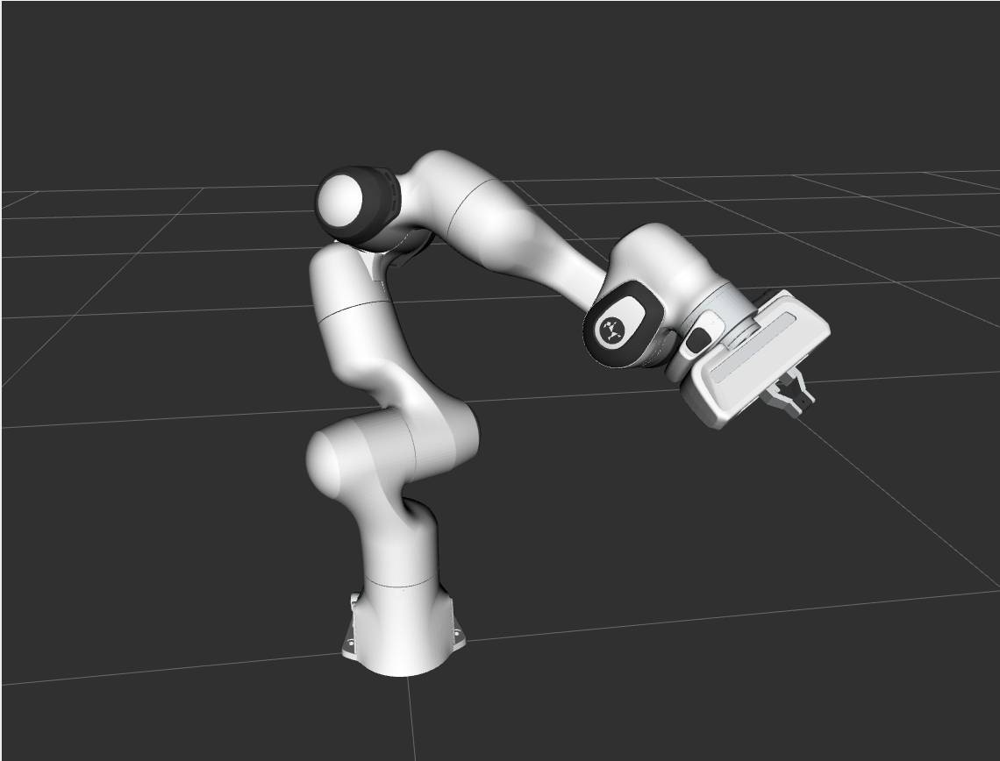
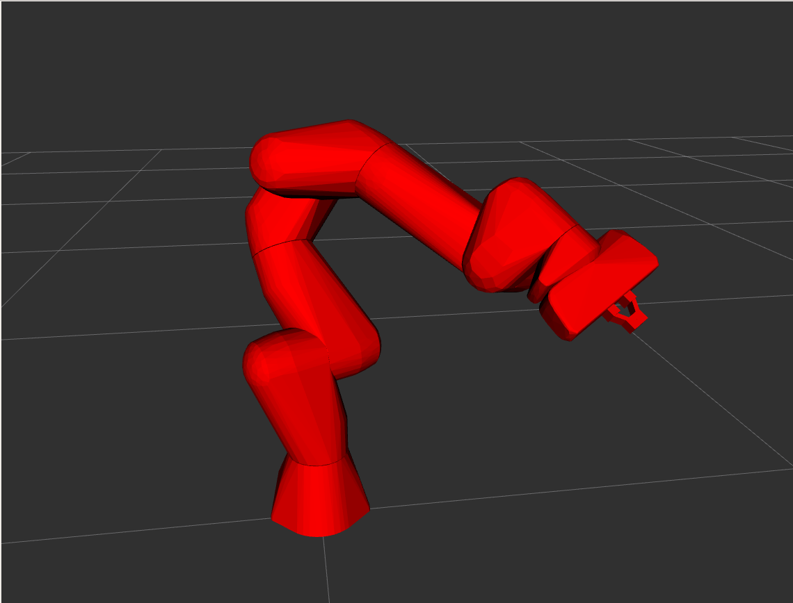
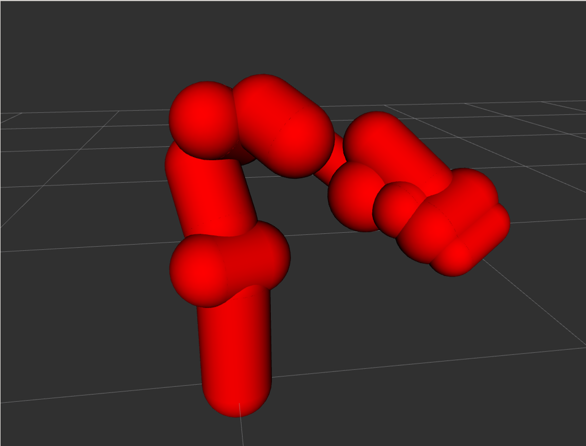

franka_description
This package contains the description of our robots and end effectors in terms of kinematics, joint limits, visual surfaces and collision space. The collision space is a simplified version of the visual description used to improve performance of collision checks. The descriptions are based on the URDF format according to the URDF XML documentation .
If you want to simulate the FR3 robots, you can pass a gazebo argument to the XACRO file.
franka_description contains the files for all the Franka Robotics robot models.
xacro $(rospack find franka_description)/robots/fr3/fr3.urdf.xacro gazebo:=true
The same works for FER(Panda):
xacro $(rospack find franka_description)/robots/panda/panda.urdf.xacro gazebo:=true
Collisions Volumes
The URDF defines two types of collision types:
Fine: These collision volumes are made from convex meshes which are approximated and drastically simplified versions of the visual meshes (.dae) of each link. The fine volumes should be used for simulating robot collisions in Gazebo
Coarse: These collision volumes are simply capsules (a cylinder with two semispherical end caps) attached to each link and inflated by a certain safety distance. These volumes are more efficient to compute and are used internally in the robot for self-collision avoidance. Use these geometries when you are planning motions e.g. with MoveIt.
Visual |
Collision (Fine) |
Collision (Coarse) |
|  |  |  |
To distinguish between the two types of collision models artificial links are inserted in the URDF
with an *_sc suffix (for self-collision):
You can control which collision model is loaded into your URDF via the gazebo XACRO argument:
xacro ... panda.urdf.xacro gazebo:=false: This will use both the fine and coarse collision model. This is also the default if you omit the arg entirely. Use this when you want to use MoveIt
xacro ... panda.urdf.xacro gazebo:=true: This will use only the fine collision model. Use this when you want a simulatable URDF i.e. for Gazebo. When using the coarse collision model the robot will of course be in constant collision with the capsules of the next link.